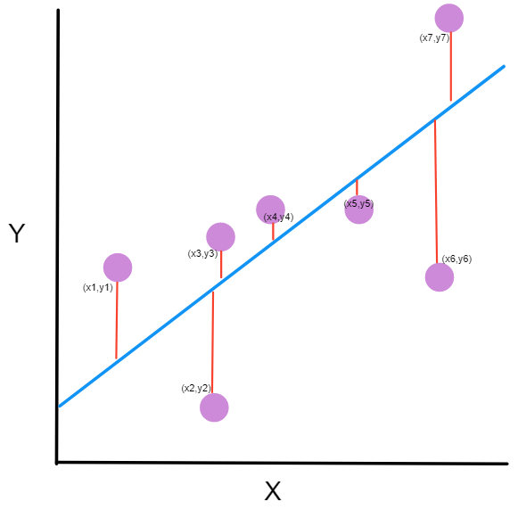
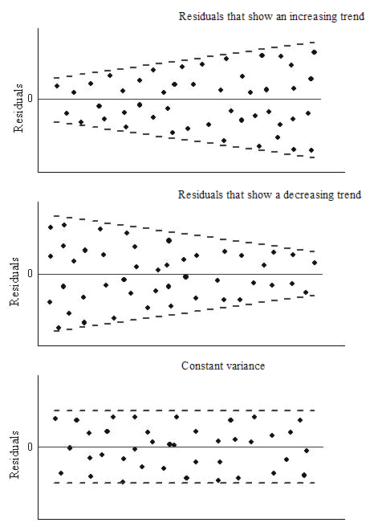

Linear regression is probably the most basic example of a machine learning algorithms.
Simple linear regression
In its most basic form, a linear regression is defined as \[y_i = \beta_0 + \beta_1 x_i + \epsilon_i \tag{1}\]
- \(y_i\) is the actual target value of the \(i_th\) observation.
- \(\beta_0\) and \(beta_1\) are the linear model parameters. See below how to find them.
- \(\epsilon_i\) is the irreducible error.
We can generalized the basic form above in the case we have many predictors (\(p\) predictors in our formula) \[y_i = \beta_0 + \sum_{j=1}^p\beta_j x_i + \epsilon_i \tag{2}\]
We can also use a matrix notation to refer to our simple linear regression with a dataset of n-observations.
\[\textbf{Y} = \textbf{X} \cdot \beta + \epsilon \tag{3}\]
Or in more some details:
\[\begin{bmatrix} y_{1} \\ y_{2} \\ \vdots \\ y_{n} \end{bmatrix} = \begin{bmatrix} 1 & x_{1} \\ 1 & x_{2} \\ \vdots \\ 1 & x_{n} \end{bmatrix} \cdot \begin{bmatrix} \beta_{0} \\ \beta_1 \end{bmatrix} + \begin{bmatrix} \epsilon_{1} \\ \epsilon_{2} \\ \vdots \\ \epsilon_{n} \end{bmatrix} \tag{4}\]
Finding the coefficients from scratch
In the case of simple linear regression, we just have one independent variable and one dependent variable. Let’s say we have \(n\) observations \((x_i, y_i)\) and we want to find a linear equations that predict y \(\hat{y_i}\) based on a given \(x_i\).
\[y_i = \beta_0 + \beta_1 x_i + \epsilon_i\]
- \(x_i\) is the independent variable (aka: predictor, explanatory variable)
- \(\beta_0\) and \(\beta_1\) are parameters of our model that have to be found.
- \(\beta_0\) is the intercept (value of y when x=0)
- \(\beta_1\) is the slope of our linear model
- \(\epsilon_i\) is the residual or error term of the \(i^{th}\) observations
- From a probabilistic perspective, \(\epsilon\) can be seen as a random variable with the following properties: \(E(\epsilon)=0\) and \(Var(\epsilon)= \sigma_{\epsilon}^2 = \sigma^2\)
- \(\hat{y_i}\) is the estimated or predicted value of y. In that sense \(\hat{y_i} = \beta_0 + \beta_1 x_i\). The error term is then the difference between the actual y and the predicted y: \(\epsilon_i = y_i - \hat{y_i}\)
The cost function (or loss function) is to minimize the sum of squared error. In that sense, we seek to minimize \[ \text{min } SSE = min \sum_{i=1}^{n} \epsilon_i^2 = \underset{\beta_0, \beta1}{argmin} \sum_{i=1}^{n} (y_i-\beta_0 - \beta_1 x_i)^2 \tag{5}\]

To minimize the SSE, we will need to use partial derivatives for both coefficients and solve it for 0.
Let’s first focus on \(\beta_0\)
\[\frac{\partial SSE}{\partial \beta_0} = -2 \sum_{i=1}^{n} (y_i-\beta_0 - \beta_1 x_i) = 0\] Breaking down our sum: \[\sum_{i=1}^{n} y_i - \sum_{i=1}^{n} \beta_0 - \sum_{i=1}^{n} \beta_1 x_i = 0\] \(\beta0\) and \(\beta_1\) are coefficient, hence: \[\sum_{i=1}^{n} y_i - n \beta_0 - \beta_1 \sum_{i=1}^{n} x_i = 0\] and \[\beta_0 = \frac{\sum_{i=1}^{n} y_i - \beta_1 \sum_{i=1}^{n} x_i}{n}\] \(\bar{y} = \frac{\sum_{i=1}^{n} y_i}{n}\) (mean of y values) and \(\bar{x}=\frac{\sum_{i=1}^{n} x_i}{n}\) (mean of x values).
and our previous equation can then be simplified as \[\beta_0 = \bar{y} - \beta_1 \bar{x} \tag{6}\]
Let’s now address the second partial derivative wrt \(\beta_1\).
\[\frac{\partial SSE}{\partial \beta_1} = -2 \sum_{i=1}^{n} x_i (y_i-\beta_0 - \beta_1 x_i) = 0\].
Distributing the \(x_i\) and substituting in the value of \(\beta_0\) from Equation 6
\[\sum_{i=1}^{n} (x_i y_i - x_i (\bar{y} - \beta_1 \bar{x}) - \beta_1 x_i^2) = 0\].
Factoring \(\beta_1\) and breaking down the sum and being careful to the sign, we get: \[\beta_1 = \frac{\sum_{i=1}^{n} x_i (y_i - \bar{y})}{\sum_{i=1}^{n} x_i (x_i - \bar{x})} \tag{7}\]
Knowing \(\bar{x} = \frac{\sum_{i=1}^{n} x_i}{n}\) and \(\bar{y} = \frac{\sum_{i=1}^{n} y_i}{n}\), we can get one step further (have a common denominator with over n). I have also removed the index on the sum for readability.
\[\beta_1 = \frac{n \Sigma x_i y_i - \Sigma x_i \Sigma y_i}{n \Sigma x_i^2 - (\Sigma x_i)^2} \tag{8}\]
We can now use the values of \(\beta_0\) Equation 6 and \(\beta_1\) Equation 8 into our estimate of y: \(\hat{y_i} = \beta_0 + \beta_1 x_i\)
Linking the slope and covariance
While going over some textbooks or online resources, we find another formula for the slope of our regression line. That formula involve the covariance and or the Pearson coefficient of correlation.
\[\beta_1 = \frac{Cov(x, y)}{\sigma^2 x} \tag{9}\]
Now let’s connect both Equation 7 and Equation 9
I’ll rewrite Equation 7 in a slightly simpler form just to lighten the notation \[\beta_1 = \frac{\sum x_i (y_i - \bar{y})}{\sum x_i (x_i - \bar{x})}\]
Now, it can be noted that that \(\sum (x_i - \bar{x}) = 0\) or similarly \(\sum (y_i - \bar{y}) = 0\). Hence \(\bar{x} \sum (y_i - \bar{y}) = 0\)
Considering \(\bar{x}\) or \(\bar{y}\) are constant, we could also write \(\sum \bar{x} (y_i - \bar{y}) = 0\) and similarly \(\sum \bar{x} (x_i - \bar{x}) = 0\).
With that in mind, we can now, go back on our Equation 7 \[\beta_1 = \frac{\sum x_i (y_i - \bar{y})}{\sum x_i (x_i - \bar{x})} = \frac{\sum x_i (y_i - \bar{y}) - \sum \bar{x} (y_i - \bar{y})}{\sum x_i (x_i - \bar{x}) - \sum \bar{x} (x_i - \bar{x})}\]
\[\beta1 = \frac{\sum (x_i - \bar{x}) (y_i - \bar{y})}{\sum (x_i - \bar{x})^2}\]
Defining \(Cov(x, y) = \frac{\sum (x_i - \bar{x}) (y_i - \bar{y})}{n}\) and \(\sigma_x = \sqrt{\frac{\sum (x_i - \bar{x})^2}{n}}\)
We can finally rewrite
\[\beta_1 = \frac{Cov(x, y)}{\sigma_x^2}\]
Finally, if we want to involve the Pearson coefficient of correlation \(\rho = \frac{Cov(x, y)}{\sigma_x \sigma_y}\), we could also re-write our slope as \[\beta_1 = \rho \frac{\sigma_y}{\sigma_x}\]
Considerations when doing linear regression
- Start with a scatter plot to check if data have a linear trend. No points of doing a linear regression on a set of data, if data are not showing a linear trend.
- How well the data fits the regression line (correlation) have NO incidence on causality. Correlation is no indication of causation
- Variables have to be normally distributed. This can be checked using histogram or QQ-plot or some other stat tests - Shapiro-Wilk test, Kolmogorov–Smirnov test. Skewness and kurtosis can also be used for that. In case of violation of this assumption, a Box-Cox transformation could be used.
- Homoscedasticity in the residuals. Variance in the spread of residuals should be constant. 
- Error terms are normally distributed (visual: histogram, QQ-plot)
- In the case of multi-variables linear regression, ensure no correlation between independent variables